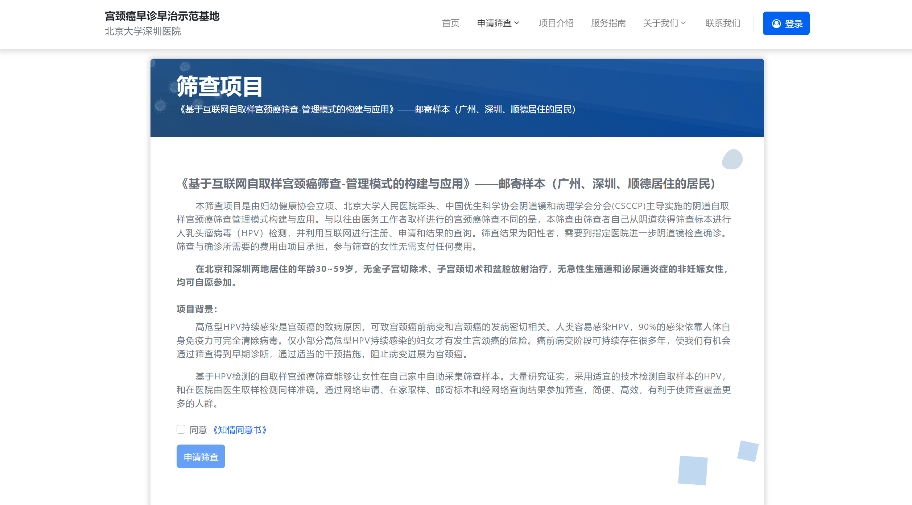
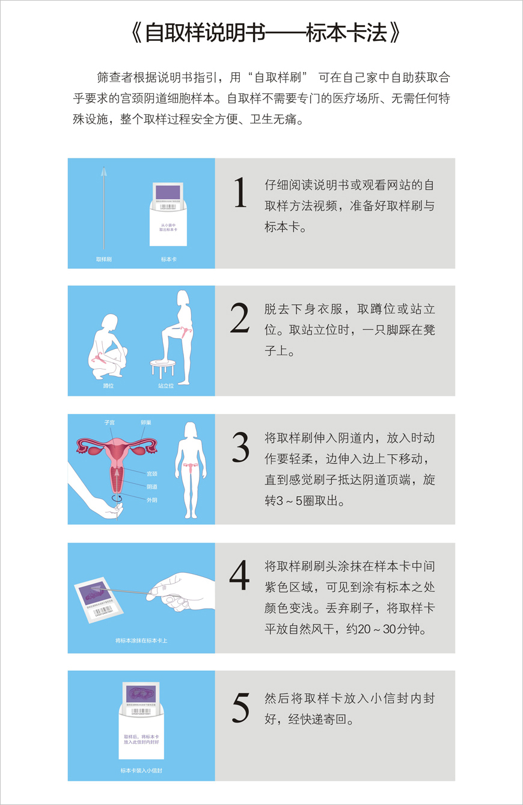
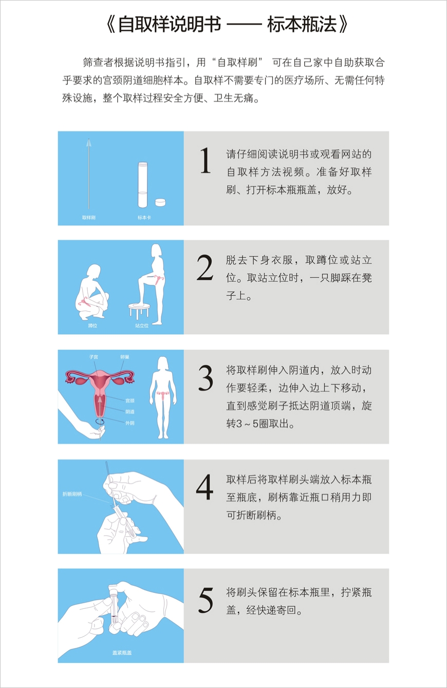
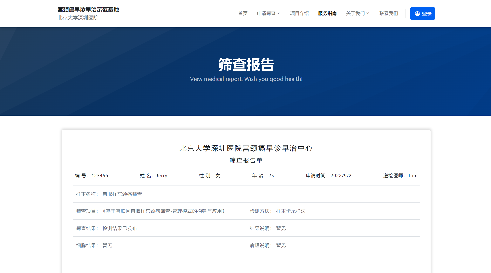

You can learn more in the service guide.
宫颈癌防治网是女性妇科疾病防治的综合性服务网站，花1分钟创建一个筛查帐户，即可轻松、便捷对您进行宫颈癌自检筛查服务。
操作步骤:
宫颈癌防治网申请筛查，需要先进行用户注册登陆后，再申请筛查。(若您没有在我们的网站注册用户，请您先进行注册用户,详细注册步骤，请参考注册用户 说明)
操作步骤:
申请筛查页：
标本卡法：
标本瓶法：
登陆系统后，点击页脚【我的筛查结果】即可查看。
结果如下：
